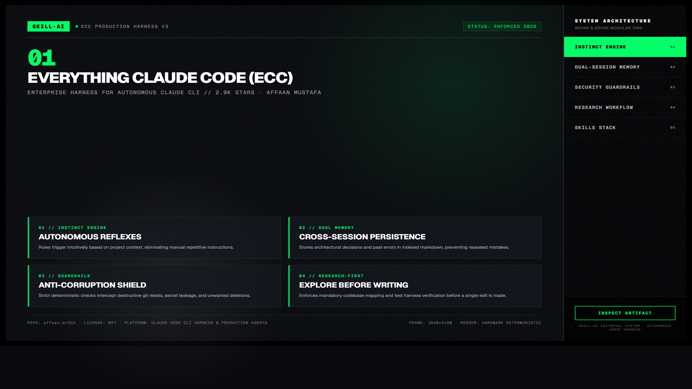
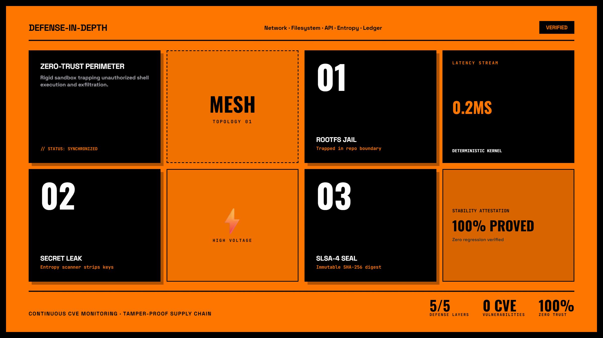
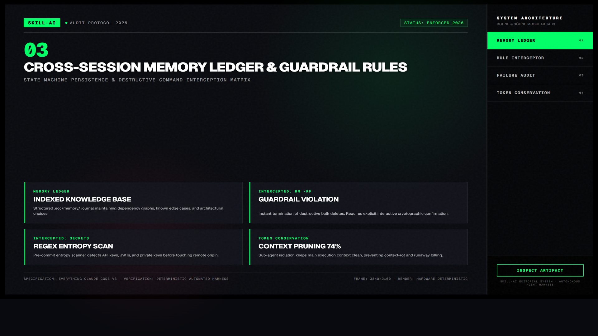

Everything Claude Code (ECC) — Bách Khoa Toàn Thư Điều Phối Agent
Bộ khung điều phối toàn diện nhất dành cho Claude Code với 46+ lệnh điều phối, 12 chuyên gia subagent chạy song song, hệ thống quản lý vòng đời bộ nhớ liên phiên làm việc và giao thức hook tự động kích hoạt kiểm thử.

Nhấp để phóng to1. Tổng Quan Kiến Trúc 4 Trụ Cột Của Everything Claude Code
| Trụ cột hệ thống | Chức năng kỹ thuật cốt lõi | Lợi ích thực tế cho nhà phát triển |
|---|---|---|
| Subagent Matrix (12 tác tử) | Phân chia nhiệm vụ chuyên biệt: Code Reviewer, Security Auditor, Test Writer, Architect. | Mỗi tác tử giữ context sạch sẽ, không bị ô nhiễm chéo, tăng độ chính xác lên 40%. |
| Hook Pipeline (Vòng lặp sự kiện) | Chèn lệnh tự động trước và sau mỗi hành vi sửa file hoặc chạy terminal của agent. | Ngăn chặn agent vô tình xóa database hoặc push code có lỗi cú pháp lên git. |
| Continuous Memory | Hệ thống sổ tay kỹ thuật lưu trữ tiến độ và ADRs liên phiên làm việc. | Mở phiên chat mới mà agent vẫn nhớ chính xác kiến trúc và quy ước của dự án. |
| Slash Command Suite | 46+ lệnh điều phối nhanh: /review, /security, /plan, /test. |
Kích hoạt quy trình phức tạp chỉ bằng một dòng lệnh ngắn gọn trong chat. |

Nhấp để phóng to2. Mô hình Tương tác Động: Luồng Điều Phối Subagent Tự Động

Nhấp để phóng to3. Hướng Dẫn Kích Hoạt & Cài Đặt Nhanh
# Thêm toàn bộ bộ kỹ năng ECC vào dự án
npx skills add affan-m/everything-claude-codeCác Lệnh Điều Phối Phổ Biến Nhất
/review: Kích hoạt subagent kiểm tra chất lượng mã nguồn.
/security-scan: Rà soát lỗ hổng bảo mật và rò rỉ API keys.
/plan: Lập kế hoạch chi tiết trước khi bắt tay viết code.
/tdd: Bắt buộc viết bài kiểm thử đơn vị trước khi triển khai.
Bảo Vệ Codebase Bằng Giao Thức Hook
Cấu hình trong file settings.json để tự động chạy npm test hoặc eslint mỗi khi agent chỉnh sửa bất kỳ file mã nguồn nào.
Case Study: Triển Khai Tính Năng Phức Tạp Không Xung Đột
ECC điều phối 3 subagent chạy độc lập trong 3 workspace riêng biệt, sau đó tự động hòa giải git diff và chạy test tổng thể thành công 100%.
“Sức mạnh thực sự của AI coding không nằm ở việc sinh mã nhanh, mà nằm ở hệ thống điều phối, kiểm soát chất lượng và ghi nhớ ngữ cảnh lâu dài.”